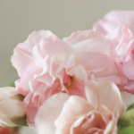
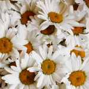
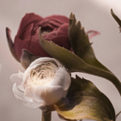
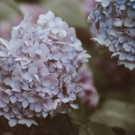

25-60-60")
Ассортимент
Добро пожаловать в мир красоты и изящества от Julia's Flowers! Мы гордимся нашим разнообразным ассортиментом, который позволяет подобрать идеальный букет или композицию для любого случая и настроения.
Что вы можете найти у нас?
- Монобукеты
Классическая элегантность. Монобукеты подчёркивают красоту одного сорта цветов — роз, пионов, тюльпанов или любых других любимых вами растений. Минимализм, который говорит больше тысячи слов. - Цветы в горшке
Идеальный выбор для тех, кто хочет наслаждаться цветами долгие годы. У нас вы найдёте широкий выбор горшечных растений, от экзотических орхидей до уютных фиалок. - Букеты на заказ
Создайте свою уникальную композицию. Вы рассказываете нам о своём видении, а наши флористы превращают его в реальность, подбирая цветы, оттенки и упаковку. - Сезонные букеты
Станьте ближе к природе! Мы предлагаем букеты из цветов, которые соответствуют каждому времени года, будь то весенние подснежники, летние ромашки или осенние хризантемы. - Цветочные композиции для интерьера
Украсьте ваш дом или офис стильными и современными композициями. Они идеально подойдут для создания уюта, дополнения дизайна или праздничного декора. - Цветочные корзины
Роскошный подарок для особого случая. Наши корзины — это сочетание красоты, практичности и неповторимого стиля. - Сухоцветы и стабилизированные цветы
Долговечная красота. Композиции из сухоцветов и стабилизированных цветов сохраняют свою свежесть и яркость в течение многих месяцев. - Флорариумы
Настоящее произведение искусства. Флорариумы — это маленький сад за стеклом, который станет оригинальным украшением любого интерьера. - Свадебные букеты
Особенный букет для важного дня. Мы создаём свадебные композиции, которые подчеркивают стиль и атмосферу вашего праздника.
Мы тщательно отбираем только свежие и качественные растения, чтобы ваши цветы радовали глаз и дарили приятные эмоции. Наши флористы вкладывают душу в каждую композицию, чтобы она соответствовала вашим ожиданиям и даже превосходила их.
   
Перейти на главную страницу